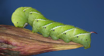
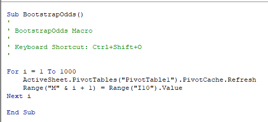
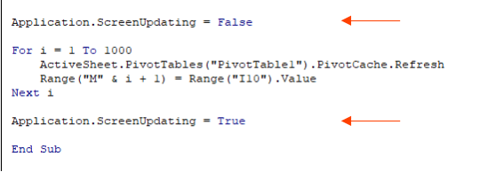
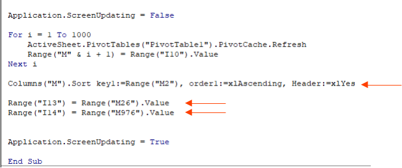

Next, we will use the bootstrap approach to test whether moths can remember things that they learned as caterpillars. This example is taken from lecture notes developed by Dolph Schluter at the University of British Columbia, which in turn were based on an experiment by Blackiston et al. (2008, PLoS One 3: e1736).
As you no doubt aware, moths and butterflies begin life as caterpillars, which look nothing like moths and butterflies. Caterpillars become adult moths through a process called "metamorphosis". The changes in body architecture during metamorphosis are dramatic, to the point that many caterpillar tissues un-differentiate, and then re-differentiate into different tissues as adults. It's possible that the brain tissue also undergoes a substantial re-formation, but if this is the case any learning that took place as a caterpillar should be lost as an adult.
Blackiston and colleagues wanted to see whether the things caterpillars learn before they go through metamorphosis are remembered after metamorphosis by adult moths. To test this, they conditioned a group of tomato hornworm (Manduca sexta) caterpillars to avoid the smell of ethyl acetate (EA) by stimulating them with a mild electrical shock when they were exposed to the chemical. These caterpillars developed an aversion to the smell, and after conditioning they would consistently crawl away when EA was presented without needing to be shocked. Another group of caterpillars used as controls were exposed to EA but were not shocked, and thus did not develop an aversion to the smell.
After each set of caterpillars underwent metamorphosis to adults, they were tested for aversion to the smell of EA by putting them in a chamber with clean air piped into one side, and EA infused air piped into the other. The direction they moved was an indication of whether they avoided EA. The summarized data are here:
Table 1. Responses to EA air by adults trained as caterpillars to avoid EA, compared with untrained controls.
| Caterpillar treatment | ||
|---|---|---|
| Adult response | Control | Trained to avoid EA |
| Chose clean air |
25 |
32 |
| Chose EA air |
21 |
9 |
| Totals |
46 |
41 |
To test whether there is a difference in selection of air types by trained or control animals, we will bootstrap the odds ratio for of choosing clean air over EA air for each treatment. Odds are ratios of the probability of an event occurring divided by the probability of an event not occurring. So, in this case, the odds of choosing clean air for trained caterpillars would be:
(32/41)/(9/41), or 32/9 = 3.55.
This tells us that an EA trained caterpillar has a 3.55 times greater probability of avoiding EA than choosing EA air as an adult. Note that the denominator is the same for both the probability of EA air and clean air, so the denominator cancels - you can calculate the odds as 32/9 = 3.55.
For controls the odds are 25/21 = 1.19 - the probability of choosing EA air is only 1.19 times as big as choosing clean air.
An odds ratio is the ratio of odds for one group divided by odds for another group. The odds ratio for trained to control caterpillars would then be (32/9) / (25/21) = 2.99. This means that the odds that a trained caterpillar will choose clean air is 2.99 times as large as the odds that a control caterpillar will choose clean air. If trained caterpillars and controls behaved in exactly the same way the odds ratio would be 1.
We now want to know whether the observed odds ratio of 2.99 is significantly different from 1. Although the researchers conducted the experiment 89 times the individual observations are categorical - they either moved toward EA air or toward clean air, but we don't have any individual numeric measurements from which we can calculate means or standard deviations.
We can assess whether the observed odds ratio of 2.99 indicates that trained caterpillars remember their training as adults by bootstrapping a confidence interval for it, and if the interval includes 1 then we can't be certain that the odds are different for trained and control caterpillars. If the interval doesn't include 1, then we have evidence that the odds of avoiding EA air are higher for moths that were trained to avoid EA air as caterpillars, and thus that moths are remembering what they learned as caterpillars.
Step 1. Open the Excel spreadsheet, and switch to sheet "MothLearning".
You'll see three columns, the first giving an ID number for the moth, the second identifying the treatment type (trained to avoid EA or control), and the third identifying the adult response (clean air or EA air). Each row is the result for a single moth. The table above was generated from data like this.
Step 2. Generate random numbers.
In cell D1 type "Random numbers", and in cell D2 write a formula that generates integer numbers between 1 and 41. Copy and paste this formula JUST to cells D2 through D42 - these will be used to select bootstrap samples for the trained group only.
Next, in cell D43, write another formula that selects numbers between 42 and 87. These will be used to select a bootstrap sample from the control animals only. Copy and paste the function to cells D44 through D88.
Step 3. Select the bootstrap sample.
In cell E1 type "Bootstrap sample", and in E2 use the "lookup" function to select a sample from the trained moths. The formula will be:
=lookup(d2,a$2:a$88, c$2:c$88)
Copy this and paste it through cell E88. This formula takes the moth ID randomly selected in column D and selected the adult response associated with it. Since you're generating the random numbers separately for trained and control animals, we can use just one lookup() function, and we can let the random number formulas take care of sampling from the right group.
Step 4. Set up a pivot table to calculate the frequencies.
Insert a pivot table into the MothLearning sheet (rather than in its own sheet), in cell H1.
For the Pivot Table, use Adult Responses as the rows and Treatments as the columns. Use adult responses as the Values (use "count" as the statistic).
The pivot table will look the same as the table above, with the same numbers in each cell of the table.
You'll need to refer to the PivotTable by name when you write your macro - if things went smoothly it's called PivotTable1, but you can confirm this by selecting a cell within the PivotTable, switching to the PivotTable Analyze tab, and then dropping down the PivotTable menu on the left side - it will show the name of the currently selected table as the PivotTable Name.
Step 5. Calculate the odds ratio.
The odds of an event is the probability the event will occur divided by the probability that it will not occur. In cell H8 type "Odds of choosing clean air", and in I8 type:
=i3/i4
This first calculation gives the odds of selecting clean air for the controls. Copy and paste to J8 to get the odds of selecting clean air for the trained moths.
Now, to calculate the ratio of these odds, in cell I10 type:
=j8/i8
and type the label "Odds ratio" in cell H10. The value should be 2.99, which is our observed experimental result.
Copy it and paste-special the observed odds ratio's value to I12, and label it "Observed odds ratio" in H12.
Type "Lower" and "Upper" into cells H13 and H14, respectively - we will be putting the lower and upper limits of the confidence intervals into I13 and I14 when we write the macro.
Step 6. Modify the pivot table to use the bootstrap samples.
Replace "Adult responses" with "Bootstrap sample" in both the row labels and Values of your pivot table. The odds ratio in cell I10 now reflects the bootstrap sample counts rather than the actual data counts.
Step 7. Name a column to receive the bootstrap values.
In cell M1 type "Bootstrap odds ratios".
Step 8. Write the macro.
We can write out the series of steps needed to accomplish this task using words instead of VBA code before we write the macro - this helps us make sure we know what we need to do, and then we can translate our "pseudo-code" into actual VBA code to get the job done. The steps are:
- For each of 1000 iterations:
- Refresh the PivotTable to summarize the current bootstrap sample
- Write the odds ratio for the bootstrap sample from cell I10 into row M below the previous one
- Sort the odds ratios from smallest to largest
- Find the 26th and 976th odds ratios and assign them to I13 and I14, respectively
Now we can translate these steps into VBA code. Let's do this one without the macro recorder - open the macros, and below the End Sub for BootstrapCI() from last time, enter the following code:
This code establishes that this is a macro using Sub and End Sub - the name of the macro is BootstrapOdds().
The apostrophes are for comments, and aren't executed. We'll write in the key combination we plan to use, but we'll need to also set it in the Macro properties later - we'll use CTRL+SHIFT+O to run the macro.
This code takes care of the first set of commands that are repeated 1000 times, using a For...Next loop. For each iteration we refresh the PivotTable (which I assume is called PivotTable1 - if you ended up with a different name replace PivotTable1 with whatever names yours was assigned). Then, the odds ratio for the current bootstrap sample in cell I10 is assigned to the cell in column M row i + 1 - since i increases by 1 each time through the loop this causes the row number to update for each iteration, and the next bootstrap sample's odds ratio will be placed below the previous one (it goes into row 2 the first time through, row 3 the second time, and so on).
We don't need to do anything to get a new bootstrap sample drawn each time - refreshing a PivotTable causes the entire sheet to recalculate, which causes a new bootstrap sample to be selected.
Step 9. Speed it up, and find the confidence limits.
To make this run quickly we can turn off screen updating before the loop runs, and turn it back on after the macro is finished, like so:
We should also sort column M, and then record the lower and upper 95% confidence limits, like so:
